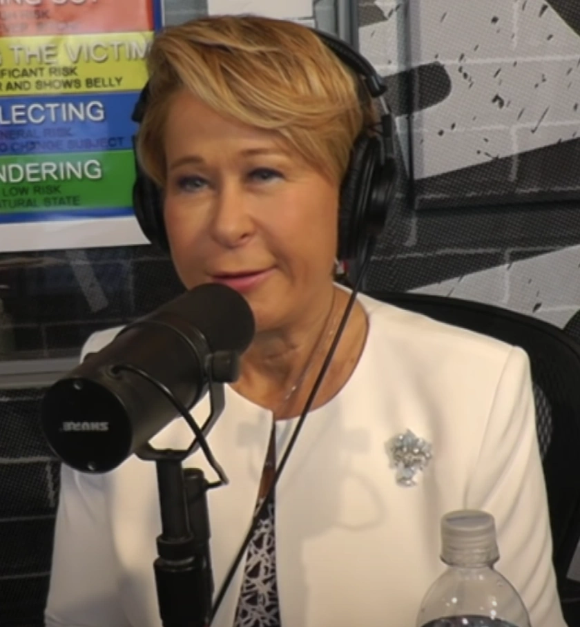

Lisa Simpson
Lisa Marie Simpson is the elder daughter and middle child of the Simpson family and one of the two tritagonists (along with Marge,) of The Simpsons.
Lisa Simpson is a charismatic 8-year-old girl who exceeds the standard achievement of the intelligence level of children her age.
In her upbringing, Lisa lacks parental involvement of Homer and Marge, which leads to hobbies such as playing saxophone and guitar, riding and caring for horses, and interest in advanced studies.
In school, Lisa's popularity is affected by those who view her as a geeky overachiever, which leaves her with only a few friends.

Lisa is voiced by Yeardley Smith.